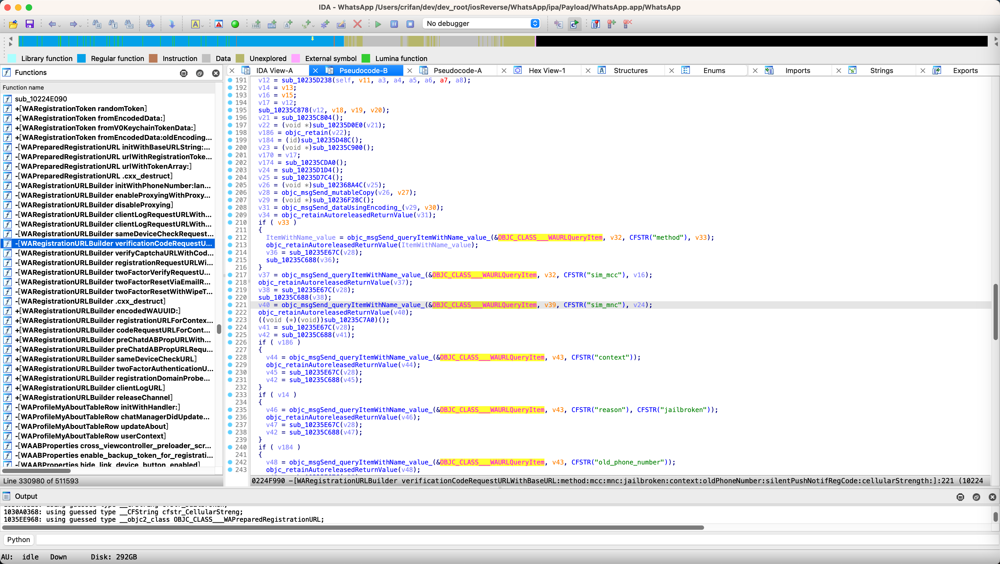
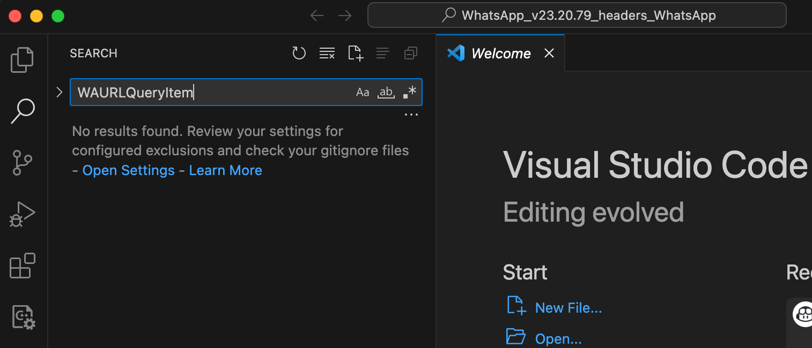
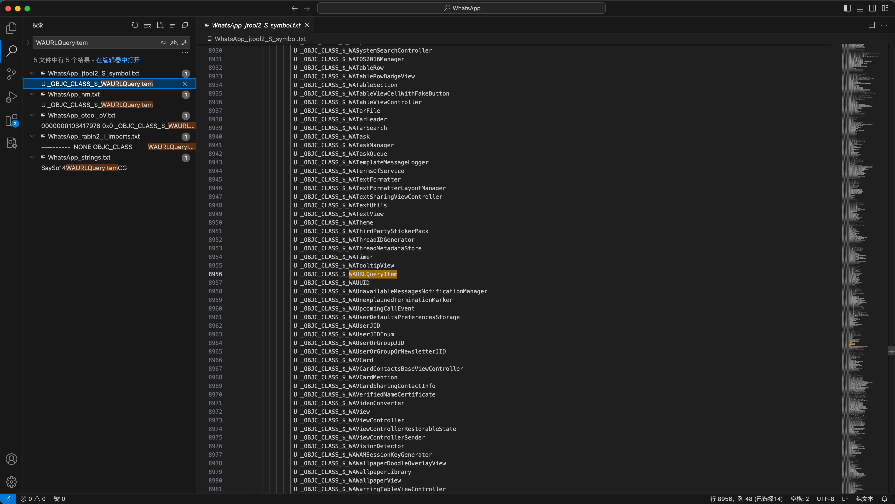
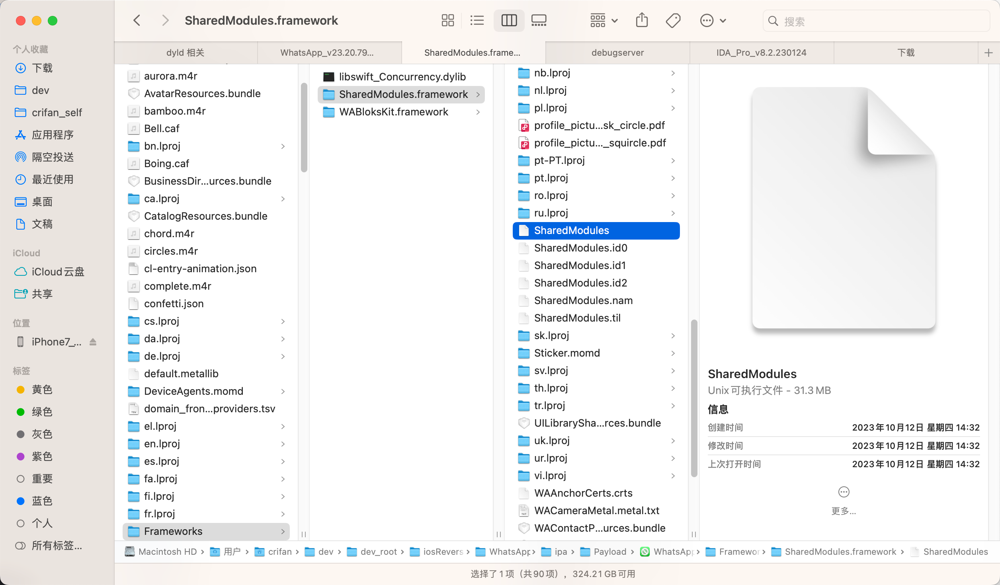
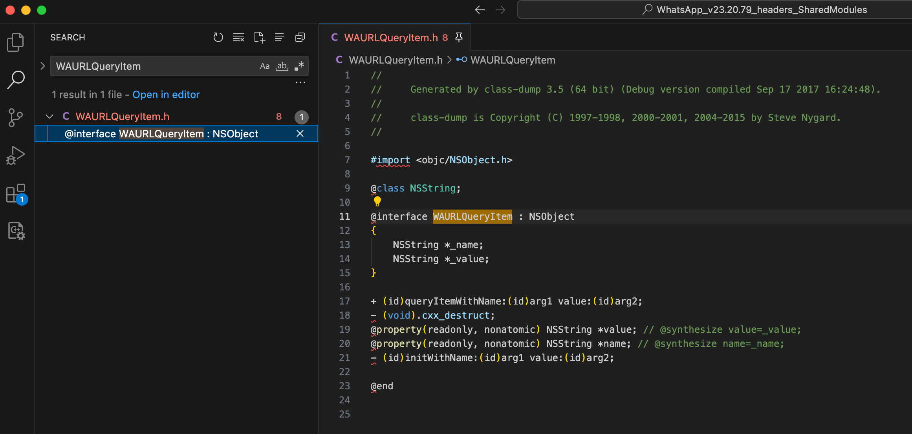
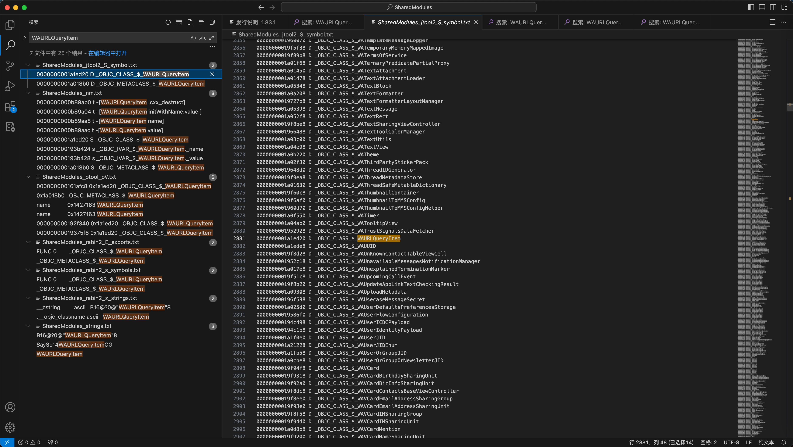
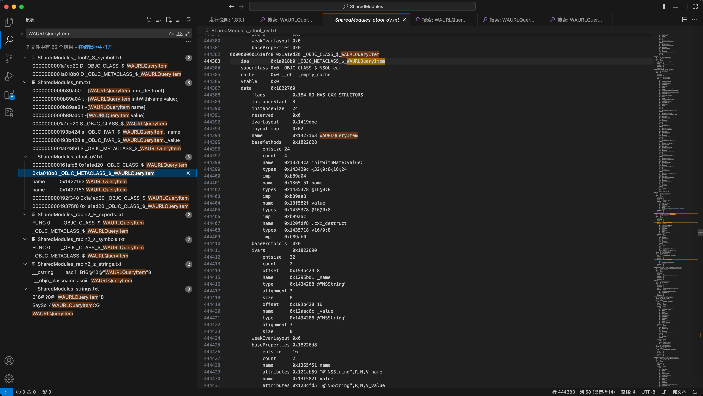

二进制中找不到类
当前二进制找不到函数时，找别的二进制看看：
概述：
- iOS逆向期间，如果当前二进制中找不到某个类和函数时，可以去试试：找其他二进制
- 以及可以从加载动态库依赖中，确认是否是依赖于别的二进制
- 对应的
Load Command中是否有LC_LOAD_DYLIB，去加载（同一个iOS的app内部的其他的）二进制文件 - 对应的
library中是否有别的二进制文件
- 对应的
- 以及二进制查看函数
- 一个是
U=Undefined：是当前二进制未定义的，需要从别的二进制导入的 - 一个是
D=Defined：是当前二进制实现的类和函数
- 一个是
- 以及可以从加载动态库依赖中，确认是否是依赖于别的二进制
WhatsApp找不到WAURLQueryItem，但别的二进制SharedModules中可以找到
iOS的appWhatsApp中的主要二进制是：
WhatsApp
去逆向期间，发现IDA伪代码中：

id __cdecl -[WARegistrationURLBuilder verificationCodeRequestURLWithBaseURL:method:mcc:mnc:jailbroken:context:oldPhoneNumber:silentPushNotifRegCode:cellularStrength:](
WARegistrationURLBuilder *self,
SEL a2,
id a3,
id a4,
id a5,
id a6,
bool a7,
id a8,
id a9,
id a10,
id a11)
{
...
v46 = objc_msgSend_queryItemWithName_value_(&OBJC_CLASS___WAURLQueryItem, v43, CFSTR("reason"), CFSTR("jailbroken"));
其中有：
OBJC_CLASS___WAURLQueryItem- iOS的类：
WAURLQueryItem
- iOS的类：
但是，此处WhatsApp的主要二进制WhatsApp中，竟然找不到WAURLQueryItem
具体现象是：
WhatsApp发现类WAURLQueryItem是未定义，需要额外引入的，且另外需要加载的库文件有SharedModules.framework/SharedModules
（1）导出的的头文件中
- 搜不到：
WAURLQueryItem- 
（2）导出的字符串等资源中
- 能搜到
WAURLQueryItem的字眼- 
具体搜索到的内容有
WhatsApp_jtool2_S_symbol.txt:
8954 U _OBJC_CLASS_$_WATooltipView
8955 U _OBJC_CLASS_$_WATooltipView
8956: U _OBJC_CLASS_$_WAURLQueryItem
8956 U _OBJC_CLASS_$_WAUUID
8957 U _OBJC_CLASS_$_WAUUID
WhatsApp_nm.txt:
8954 U _OBJC_CLASS_$_WATooltipView
8955: U _OBJC_CLASS_$_WAURLQueryItem
8956 U _OBJC_CLASS_$_WAUUID
WhatsApp_otool_oV.txt:
1050534 0000000103417970 0x0 _OBJC_CLASS_$_NSURLComponents
1050535: 0000000103417978 0x0 _OBJC_CLASS_$_WAURLQueryItem
1050536 0000000103417980 0x0 _OBJC_CLASS_$_WACacheQueue
WhatsApp_rabin2_i_imports.txt:
8957 8953 ---------- NONE OBJC_CLASS WATooltipView
8958: 8954 ---------- NONE OBJC_CLASS WAURLQueryItem
8959 8955 ---------- NONE OBJC_CLASS WAUUID
- 具体分析：
WhatsApp_jtool2_S_symbol.txt中的8956: U _OBJC_CLASS_$_WAURLQueryItem- 相关含义：U=Undefined=未定义
WhatsApp_rabin2_i_imports.txt中的8958: 8954 ---------- NONE OBJC_CLASS WAURLQueryItem- 中有WAURLQueryItem：表示WAURLQueryItem是属于（从外部）import进来的
- -> 表示此类：WAURLQueryItem，是从外部导入import进来的，当前二进制（WhatsApp）中是没有此类的具体实现的
（3）后记：在依赖的导入的Library库中，也能找到，是依赖于：库SharedModules的
具体现象是：
导出的字符串资源文件中，可以找到：
13 个结果 - 8 文件
WhatsApp_jtool2_L_library.txt:
20 /System/Library/Frameworks/CoreBluetooth.framework/CoreBluetooth (compatibility version 1.0.0, current version 1.0.0)
21 /System/Library/Frameworks/CoreBluetooth.framework/CoreBluetooth (compatibility version 1.0.0, current version 1.0.0)
22: @rpath/SharedModules.framework/SharedModules (compatibility version 1.0.0, current version 1.0.0)
22 @rpath/WARCDManager.framework/WARCDManager (compatibility version 0.0.0, current version 0.0.0)
23 @rpath/WARCDManager.framework/WARCDManager (compatibility version 0.0.0, current version 0.0.0)
WhatsApp_jtool2_l_list.txt:
88 LC 32: LC_LOAD_DYLIB /System/Library/Frameworks/CoreBluetooth.framework/CoreBluetooth
89: LC 33: LC_LOAD_DYLIB @rpath/SharedModules.framework/SharedModules
90 LC 34: LC_LOAD_WEAK_DYLIB @rpath/WARCDManager.framework/WARCDManager
...
WhatsApp_otool_l.txt:
Load command 33
cmd LC_LOAD_DYLIB
cmdsize 72
name @rpath/SharedModules.framework/SharedModules (offset 24)
time stamp 2 Thu Jan 1 08:00:02 1970
current version 1.0.0
compatibility version 1.0.0
...
WhatsApp_rabin2_l_libraries.txt:
21 /System/Library/Frameworks/CoreBluetooth.framework/CoreBluetooth
22: @rpath/SharedModules.framework/SharedModules
23 @rpath/WARCDManager.framework/WARCDManager
...
具体解释是：
WhatsApp_jtool2_L_library.txt22: @rpath/SharedModules.framework/SharedModules (compatibility version 1.0.0, current version 1.0.0)- 表示要，当前二进制
WhatsApp加载时，所依赖的，还要额外加载的库是SharedModules.framework/SharedModules
- 表示要，当前二进制
WhatsApp_jtool2_l_list.txt89: LC 33: LC_LOAD_DYLIB @rpath/SharedModules.framework/SharedModules- 表示还要额外加载一个 Dylib=动态库文件：
SharedModules.framework/SharedModules
- 表示还要额外加载一个 Dylib=动态库文件：
WhatsApp_otool_l.txtLoad command 33：是有一个Load Commandcmd LC_LOAD_DYLIB：command类型是要加载Dylib=动态库name @rpath/SharedModules.framework/SharedModules (offset 24)：具体要加载的库文件是：SharedModules.framework/SharedModules
SharedModules中找到了类WAURLQueryItem的定义
最后是从同一个iOSapp：WhatsApp的：
- 另外一个核心二进制
SharedModules- 
中找到了：类WAURLQueryItem的具体实现
具体现象是：
（1）SharedModules的导出头文件中，能搜到：类WAURLQueryItem
- 
（2）以及SharedModules导出的字符串资源中，也能找到：类WAURLQueryItem


25 个结果 - 7 文件
SharedModules_jtool2_S_symbol.txt:
2880 0000000001952928 D _OBJC_CLASS_$_WATrustSignalsDataFetcher
2881: 0000000001a1ed20 D _OBJC_CLASS_$_WAURLQueryItem
2882 0000000001a1ede8 D _OBJC_CLASS_$_WAUUID
6993 0000000001a26170 D _OBJC_METACLASS_$_WATrustSignalsDataFetcher
6994: 0000000001a018b0 D _OBJC_METACLASS_$_WAURLQueryItem
6995 0000000001a1ecf8 D _OBJC_METACLASS_$_WAUUID
SharedModules_nm.txt:
25025 00000000000ac75c t -[WATrustSignalsDataFetcher init]
25026: 0000000000b89ab0 t -[WAURLQueryItem .cxx_destruct]
25027: 0000000000b89a04 t -[WAURLQueryItem initWithName:value:]
25028: 0000000000b89aa8 t -[WAURLQueryItem name]
25029: 0000000000b89aac t -[WAURLQueryItem value]
25030 0000000000ee293c t -[WAUUID .cxx_destruct]
92477 0000000001952928 S _OBJC_CLASS_$_WATrustSignalsDataFetcher
92478: 0000000001a1ed20 S _OBJC_CLASS_$_WAURLQueryItem
92479 0000000001a1ede8 S _OBJC_CLASS_$_WAUUID
101272 0000000001a261b8 d _OBJC_IVAR_$_WATrustSignalsDataFetcher.workQueue
101273: 000000000193b424 s _OBJC_IVAR_$_WAURLQueryItem._name
101274: 000000000193b428 s _OBJC_IVAR_$_WAURLQueryItem._value
101275 000000000193dc64 s _OBJC_IVAR_$_WAUUID._creationDate
112634 0000000001a26170 D _OBJC_METACLASS_$_WATrustSignalsDataFetcher
112635: 0000000001a018b0 S _OBJC_METACLASS_$_WAURLQueryItem
112636 0000000001a1ecf8 S _OBJC_METACLASS_$_WAUUID
SharedModules_otool_oV.txt:
444381 baseProperties 0x0
444382: 000000000161afc8 0x1a1ed20 _OBJC_CLASS_$_WAURLQueryItem
444383: isa 0x1a018b0 _OBJC_METACLASS_$_WAURLQueryItem
444384 superclass 0x0 _OBJC_CLASS_$_NSObject
444393 layout map 0x02
444394: name 0x1427163 WAURLQueryItem
444395 baseMethods 0x1822628
444442 ivarLayout 0x0
444443: name 0x1427163 WAURLQueryItem
444444 baseMethods 0x18225c0
672642 000000000192f338 0x1a02120 _OBJC_CLASS_$_WAStashedMessage
672643: 000000000192f340 0x1a1ed20 _OBJC_CLASS_$_WAURLQueryItem
672644 000000000192f348 0x1a16aa8 _OBJC_CLASS_$_WAPBPeerMessage
676826 00000000019375f0 0x1a01ba8 _OBJC_CLASS_$_WALogWriter
676827: 00000000019375f8 0x1a1ed20 _OBJC_CLASS_$_WAURLQueryItem
676828 0000000001937600 0x1a01928 _OBJC_CLASS_$_WAFuture
SharedModules_rabin2_E_exports.txt:
34621 34617 0x01952928 0x01952928 GLOBAL FUNC 0 _OBJC_CLASS_$_WATrustSignalsDataFetcher
34622: 34618 0x01a1ed20 0x01a1ed20 GLOBAL FUNC 0 _OBJC_CLASS_$_WAURLQueryItem
34623 34619 0x01a1ede8 0x01a1ede8 GLOBAL FUNC 0 _OBJC_CLASS_$_WAUUID
38734 38730 0x01a26170 0x01a26170 GLOBAL FUNC 0 _OBJC_METACLASS_$_WATrustSignalsDataFetcher
38735: 38731 0x01a018b0 0x01a018b0 GLOBAL FUNC 0 _OBJC_METACLASS_$_WAURLQueryItem
38736 38732 0x01a1ecf8 0x01a1ecf8 GLOBAL FUNC 0 _OBJC_METACLASS_$_WAUUID
SharedModules_rabin2_s_symbols.txt:
34621 34617 0x01952928 0x01952928 GLOBAL FUNC 0 _OBJC_CLASS_$_WATrustSignalsDataFetcher
34622: 34618 0x01a1ed20 0x01a1ed20 GLOBAL FUNC 0 _OBJC_CLASS_$_WAURLQueryItem
34623 34619 0x01a1ede8 0x01a1ede8 GLOBAL FUNC 0 _OBJC_CLASS_$_WAUUID
38734 38730 0x01a26170 0x01a26170 GLOBAL FUNC 0 _OBJC_METACLASS_$_WATrustSignalsDataFetcher
38735: 38731 0x01a018b0 0x01a018b0 GLOBAL FUNC 0 _OBJC_METACLASS_$_WAURLQueryItem
38736 38732 0x01a1ecf8 0x01a1ecf8 GLOBAL FUNC 0 _OBJC_METACLASS_$_WAUUID
SharedModules_rabin2_z_strings.txt:
18365 13101 0x0114de06 0x0114de06 34 35 5.__TEXT.__cstring ascii mms-base-task//finish/finishing/%@
18366 13101 0x0114de06 0x0114de06 34 35 5.__TEXT.__cstring ascii mms-base-task//finish/finishing/%@
18367: 13102 0x0114de29 0x0114de29 24 25 5.__TEXT.__cstring ascii B16@?0@"WAURLQueryItem"8
18367 13103 0x0114de42 0x0114de42 7 8 5.__TEXT.__cstring ascii _nc_cat
18368 13103 0x0114de42 0x0114de42 7 8 5.__TEXT.__cstring ascii _nc_cat
114694 2073 0x0142715e 0x0142715e 4 5 12.__TEXT.__objc_classname ascii HTML
114695 2073 0x0142715e 0x0142715e 4 5 12.__TEXT.__objc_classname ascii HTML
114696: 2074 0x01427163 0x01427163 14 15 12.__TEXT.__objc_classname ascii WAURLQueryItem
114696 2075 0x01427172 0x01427172 13 14 12.__TEXT.__objc_classname ascii DataDetection
114697 2075 0x01427172 0x01427172 13 14 12.__TEXT.__objc_classname ascii DataDetection
SharedModules_strings.txt:
17521 mms-base-task//finish/finishing/%@
17522: B16@?0@"WAURLQueryItem"8
17523 _nc_cat
112316 ySo11WAMessageIDCSo0A0C_G
112317: SaySo14WAURLQueryItemCG
112318 SDySo11WADeviceJIDC
114720 HTML
114721: WAURLQueryItem
114722 DataDetection
具体解释是：
SharedModules_jtool2_S_symbol.txt- 中的
2881: 0000000001a1ed20 D _OBJC_CLASS_$_WAURLQueryItem6994: 0000000001a018b0 D _OBJC_METACLASS_$_WAURLQueryItem
- 其中：
- D=
Defined=已定义=有定义 _OBJC_CLASS_= 是ObjC的class类_OBJC_METACLASS_= 是ObjC的meta class=元类
- D=
- 中的
SharedModules_nm.txt25027: 0000000000b89a04 t -[WAURLQueryItem initWithName:value:]- t=
Text symbol, local (static)= 本地的static的文本符号- 函数名： -[WAURLQueryItem initWithName:value:]
- t=
92478: 0000000001a1ed20 S _OBJC_CLASS_$_WAURLQueryItem- S=
Section symbol, global= 全局的节的符号，此处ObjC的类WAURLQueryItem
- S=
101273: 000000000193b424 s _OBJC_IVAR_$_WAURLQueryItem._name- t=
Text symbol, local (static)= 本地的static的文本符号- ObjC类WAURLQueryItem的ivar变量名_name
- t=
112635: 0000000001a018b0 S _OBJC_METACLASS_$_WAURLQueryItem- S=
Section symbol, global= 全局的节的符号，此处是ObjC的MetaClass元类WAURLQueryItem
- S=
SharedModules_otool_oV.txt444382: 000000000161afc8 0x1a1ed20 _OBJC_CLASS_$_WAURLQueryItem- 是有ObjC的类：WAURLQueryItem
SharedModules_rabin2_E_exports.txt- 中的
34622: 34618 0x01a1ed20 0x01a1ed20 GLOBAL FUNC 0 _OBJC_CLASS_$_WAURLQueryItem38735: 38731 0x01a018b0 0x01a018b0 GLOBAL FUNC 0 _OBJC_METACLASS_$_WAURLQueryItem
- 表示：
- 有ObjC的普通类WAURLQueryItem 和ObjC的元类WAURLQueryItem，要导出export （供别处调用）
- 中的
SharedModules_rabin2_s_symbols.txt- 中的
34622: 34618 0x01a1ed20 0x01a1ed20 GLOBAL FUNC 0 _OBJC_CLASS_$_WAURLQueryItem38735: 38731 0x01a018b0 0x01a018b0 GLOBAL FUNC 0 _OBJC_METACLASS_$_WAURLQueryItem
- 表示
- 有global全局的类：ObjC普通类和元类：WAURLQueryItem的 s=symbol符号
- 中的
SharedModules_rabin2_z_strings.txt114696: 2074 0x01427163 0x01427163 14 15 12.__TEXT.__objc_classname ascii WAURLQueryItem- 表示：WAURLQueryItem是个Text节（Section）的ObjC的类名
__objc_classname
- 表示：WAURLQueryItem是个Text节（Section）的ObjC的类名
SharedModules_strings.txt- 中的
17522: B16@?0@"WAURLQueryItem"8112317: SaySo14WAURLQueryItemCG114721: WAURLQueryItem
- 表示
- 有类WAURLQueryItem相关的字符串（类名）和函数名等内容
- 中的